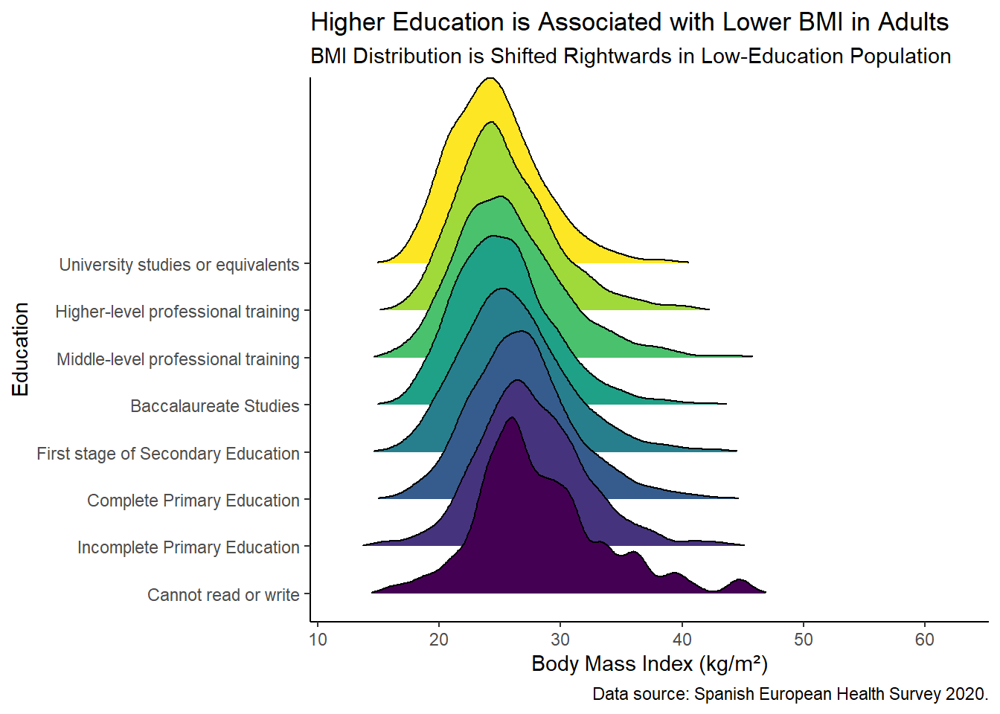

pacman::p_load(
tidyverse,
ggridges
)Visualizing BMI Distributions Across Educational Levels with ggridges
R
importing
data cleaning
ggplot2
ggridges
tidyverse
health
A detailed guide on using ggridges to visualize BMI distributions across educational levels using data from the Spanish European Health Survey 2020.
Introduction
Data visualization is a powerful tool in understanding complex datasets, especially in the field of public health. One such visualization technique that can reveal intricate patterns and distributions is the ridge plot, also known as the joy plot. In this blog post, we will explore how to use the ggridges package in R to visualize the relationship between educational levels and Body Mass Index (BMI) distributions using data from the Spanish European Health Survey 2020, discussed in a previous post.
Ridge plots are particularly useful for comparing the distribution of a numerical variable across different categories. In this case, we will compare BMI distributions across various levels of education. This visualization can help us understand how educational attainment might influence BMI, providing insights that are critical for public health strategies and interventions.
The ggridges package in R offers a simple and elegant way to create ridge plots. Combined with the ggplot2 and tidyverse packages, it provides a flexible and powerful toolkit for data visualization. Let’s dive into the process of creating a ridge plot, from data import and cleaning to the final visualization.
Load Libraries
First, we load the necessary libraries.
Import and Clean Data
We start by importing the dataset and performing necessary data cleaning steps.
file_2020 <- "MICRODATOS_PUBLICACION_CADULTO.txt"
# Read using read_fwf
data_raw <- read_fwf(
file_2020,
col_positions = fwf_cols(
sex = c(13, 13),
age = c(14, 16),
height = c(369, 371),
weight = c(372, 374),
education = c(38, 39)
),
col_types = "iiiii", # set all columns as integers
na = c("998","999") # Missing values encoded as 998 (doesn't know) or 999 (doesn't answer)
) |>
mutate(
education = ifelse(education %in% c(1, 98, 99), NA, education) # Missing in education encoded as 1, 98 or 99
)
data_clean <- data_raw |>
mutate(
sex = factor(sex, labels = c("Male", "Female")),
education = factor(
education,
levels = 2:9,
labels = c(
"Cannot read or write",
"Incomplete Primary Education",
"Complete Primary Education",
"First stage of Secondary Education",
"Baccalaureate Studies",
"Middle-level professional training",
"Higher-level professional training",
"University studies or equivalents"
)
),
bmi = weight / (height/100) ^ 2
)
glimpse(data_clean)Rows: 22,072
Columns: 6
$ sex <fct> Male, Female, Male, Female, Male, Female, Female, Female, Ma…
$ age <int> 60, 87, 38, 43, 41, 34, 60, 79, 87, 82, 77, 44, 47, 16, 48, …
$ height <int> 175, NA, 174, 164, 169, 167, 159, 150, 178, NA, 155, 184, 18…
$ weight <int> 74, NA, 80, 58, 74, 90, NA, 73, 72, 64, NA, 86, 85, 56, 67, …
$ education <fct> Middle-level professional training, Baccalaureate Studies, M…
$ bmi <dbl> 24.16327, NA, 26.42357, 21.56454, 25.90946, 32.27079, NA, 32…Visualize Data
Next, we create a visualization to explore the relationship between education levels and BMI.
# Ridges by educational level
data_clean |>
ggplot(aes(x = bmi, y = education, group = education, fill = education)) +
geom_density_ridges(rel_min_height = 0.005, scale = 4) +
theme_classic() +
labs(
x = "Body Mass Index (kg/m²)",
y = "Education",
title = "Higher Education is Associated with Lower BMI in Adults",
subtitle = "BMI Distribution is Shifted Rightwards in Low-Education Population",
caption = "Data source: Spanish European Health Survey 2020."
) +
scale_fill_viridis_d() +
theme(
legend.position = "none"
)
Plot Interpretation
The ridge plot (also known as a joy plot) is a useful visualization for comparing distributions of a numerical variable across different categories. Here’s a breakdown of the syntax and functions used in the code above:
ggplot(aes(x = bmi, y = education, group = education, fill = education)): Initializes the ggplot object, specifying the aesthetics for the x-axis (bmi), y-axis (education), and the grouping and fill color byeducation.geom_density_ridges(rel_min_height = 0.005, scale = 4): Adds the ridge plot layers.geom_density_ridges()creates density plots for each category ofeducation, stacked one above the other.rel_min_heightsets the minimum height of the ridges relative to the peak of the density curves. A lower value makes the ridges appear more separated.scalecontrols the vertical scaling of the ridges, which can make the plot more readable.
This visualization clearly shows how BMI distributions shift across different educational levels. Generally, individuals with higher education levels tend to have lower BMIs, as evidenced by the leftward shift in their distributions.
Conclusion
Our analysis of the Spanish European Health Survey 2020 data indicates a clear association between educational levels and BMI among Spanish adults. Higher educational attainment correlates with lower BMI, suggesting that education and socioeconomic status may play a critical role in mantaining a healthy body weight.
References:
- Encuesta Europea de Salud en España 2020
- Wilke C (2024). ggridges: Ridgeline Plots in ‘ggplot2’. R package version 0.5.6, https://CRAN.R-project.org/package=ggridges.
- EpiStats Blog. Load Data from the National Health Survey Spain 2020